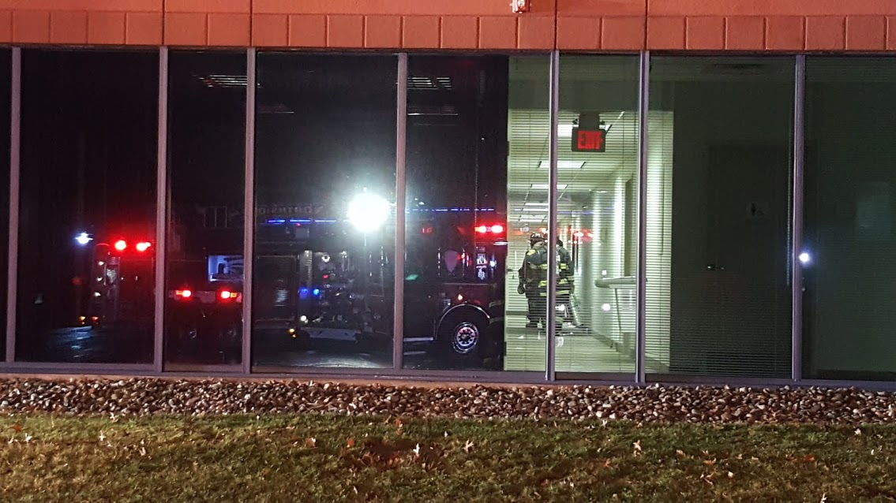
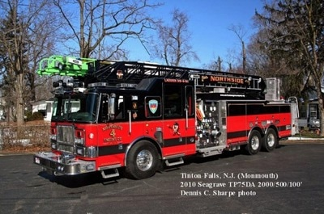

Serving the community since 1955.
Northside Engine Company No. 4 is an all-volunteer fire company protecting the Borough of Tinton Falls — answering 300+ calls a year, any day, any hour.
Neighbors protecting neighbors.
Northside Engine Company (NSEC) is one of the four Tinton Falls fire departments — and the youngest. Our members average 15 years of experience and train monthly to keep the borough safe. We are proud to serve our neighbors when they call.
About Us
Explore the company

Our Apparatus
Ladder 36-491, Engine 36-477, Brush 36-494 and Rescue 36-486.
Learn more →
History
Chartered February 28, 1955 by 21 founding members.
Learn more →
Fire Scene Images
Selected photos from Northside fire scenes.
Learn more →
Around Station 4
Drills, parades, Memorial Day and community events.
Learn more →
Officers & Admin
Our line and administrative officers.
Learn more →
Building 491
How our 100-ft Seagrave ladder came together in 2009.
Learn more →Join Northside. All training included.
18+, valid NJ driver’s license, and 6 months’ residency in Tinton Falls or a neighboring town. Junior program available for under 18.
Support your volunteer firefighters.
Donate securely online. Every dollar keeps our trucks and crews ready. Follow our latest news on Facebook.
More ways to give